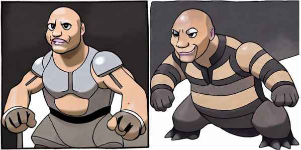

For the week 9-10 challenge, I chose to do Generative AI with my group. As none of us had much knowledge about Stable Diffusion, our first step was for us to famiarize ourselves with it. After that, we followed a tutorial to help us fine-tune Stable Diffusion. The great thing about this tutorial was that there was already a dataset provided. Our model was now able to take the users input, for example Dwayne 'The Rock' Johnson, and turn it into a Pokémon-like creature.
See the results below:
Caption: Darth Vader as a Pokémon
Caption: Mark Rutte riding his bicycle as a Pokémon
Caption: Dwayne 'The Rock' Johnson as a Pokémon
Caption: Donald Trump as a Pokémon